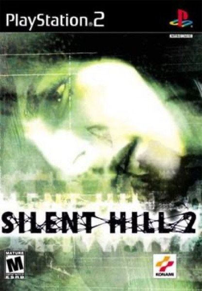

Horror · 2001
Silent Hill 2
Grief rendered as a town; still the medium's finest psychological horror.

Cover: Wikipedia: Silent Hill 2
Facts
- Released
- 2001-09-25
- Genre
- Horror
- Category
- Horror
- Platforms
- PC, PlayStation, Xbox
- Developers
- Team Silent
- Publishers
- Konami